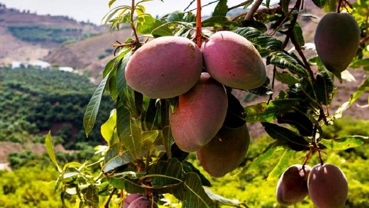
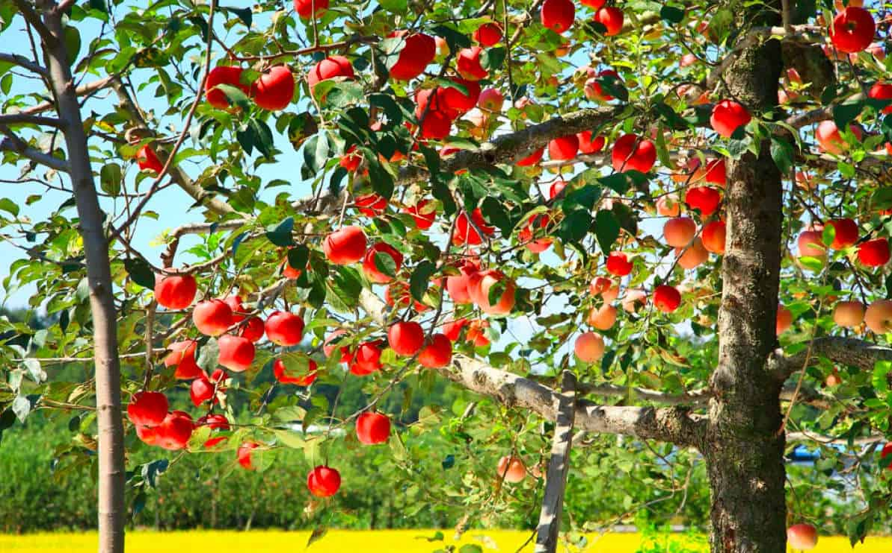
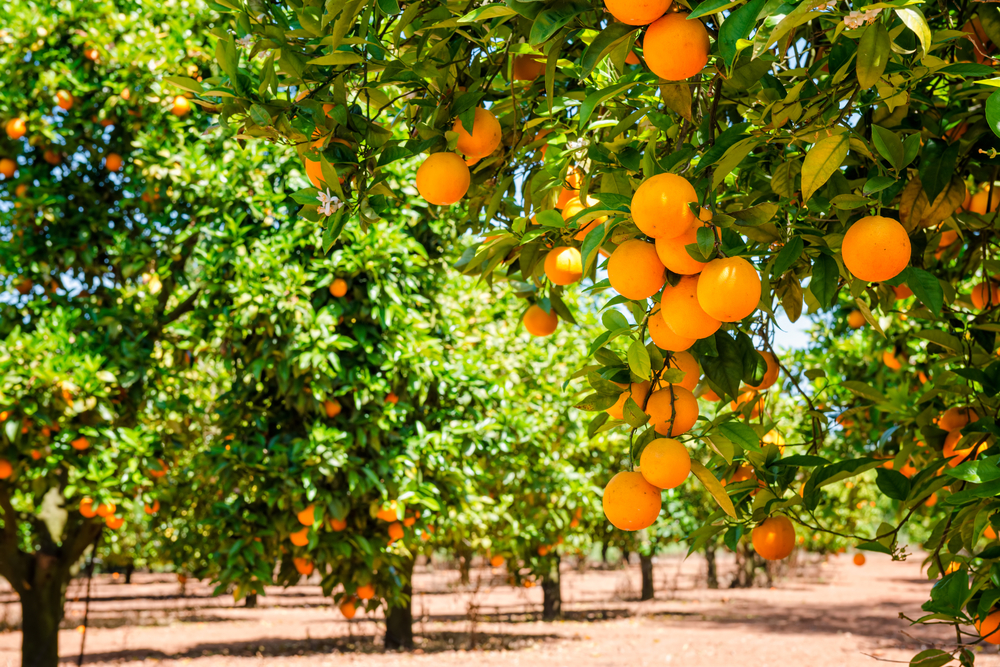
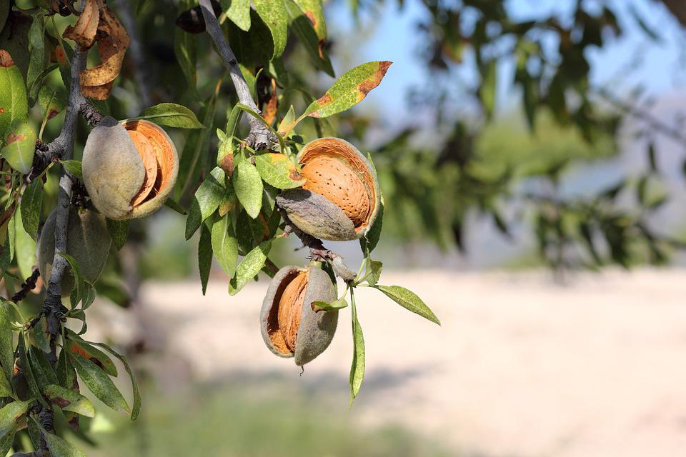

Se define como árboles a las plantas con un sólo tronco y copa bien definida formada por tallos secundarios o ramas. Existen muchos tipos de árboles, pero hoy en su día, hablaremos de los árboles frutales, los cuales se clasifican en función de los frutos que producen. Echemos un vistazo a los cuatro tipos principales:
Se trata básicamente de los árboles que producen frutos carnosos y que en su interior cuentan con semillas dentro de un hueso duro. Los árboles frutales que entran en este grupo son: el ciruelo, el cerezo, el mango, el olivo y el albaricoquero.
En este caso se trata de un grupo de árboles frutales carnosos y que en su interior cuentan con semillas que están dentro de un endocarpio coriáceo. Entre los árboles más destacados en este grupo encontramos el manzano, el peral y el nisperero.
Dentro de este apartado están todos los que producen frutos con estructura muy variada, por ejemplo, el naranjo, el limonero, el mandarino, las higueras, mangiferas, y papayos.
Este tipo de frutales se distinguen de los demás ya que producen frutos que están encerrados en una cáscara. Entre los más representativos podemos mencionar al avellano, el nogal, el castaño, el roble, el almendro o la encina.
Pues bien, el cultivo, tratamiento y desarrollo de árboles frutales está enmarcado dentro de la actividad de la horticultura pero ya son muchos aficionados y familias urbanas los que se deciden a plantar árboles frutales en sus jardines. Es importante mencionar que el cuidado de los árboles frutales no es una tarea fácil puesto que en el momento que se obtengan frutos tendremos que lidiar con plagas de insectos y microorganismos de diferentes tipos, con el clima y con algunos otros inconvenientes.
Además, es necesario tener ciertos conocimientos sobre las técnicas que han de aplicarse al cultivo de árboles frutales. Una de las más importantes es la poda que se debe realizar desde el primer año para que nuestro árbol frutal adquiera la forma más adecuada para después dar frutos grandes y de calidad.
Junto con lo ya mencionado, los cuidados de los árboles frutales también incluyen actividades de temporada como el caso del control de plagas, insectos y enfermedades. Otro de los cuidados en los árboles frutales es el adelgazamiento de la fruta, que en este caso implica la eliminación de algunos de los frutos de tal manera que lo que quede alcance un tamaño razonable.
Por lo que respecta al mantenimiento de los árboles frutales, hay varios aspectos importantes que debemos considerar para que las frutas se logren. Lo primero es el riego y en este sentido lo recomendable para árboles recién plantados es regarlos cuando haya 2 pulgadas de superficie en el suelo secas. Conforme los árboles se desarrollan, los sistemas de raíces son más amplios, por lo tanto se pueden regar con menos frecuencia.
Además del riego, es fundamental la fertilización, sin embargo y aunque los que cultivan comercialmente fertilizan con regularidad, las personas que cultivan en el hogar, se dan cuenta que sus árboles requieren de una alimentación única mínima. En todo caso, lo ideal es basar el tiempo de fertilización en función del crecimiento del árbol.
Tampoco hay que olvidar el control de plagas y las enfermedades ya que todas ellas pueden afectar a los árboles frutales. En este caso se recomienda utilizar un spray de aceite en estado latente durante el invierno ya que con ello se evitan muchos problemas de plaga. Este aceite lo que hace es sofocar las plagas, así como a los huevos invernantes.